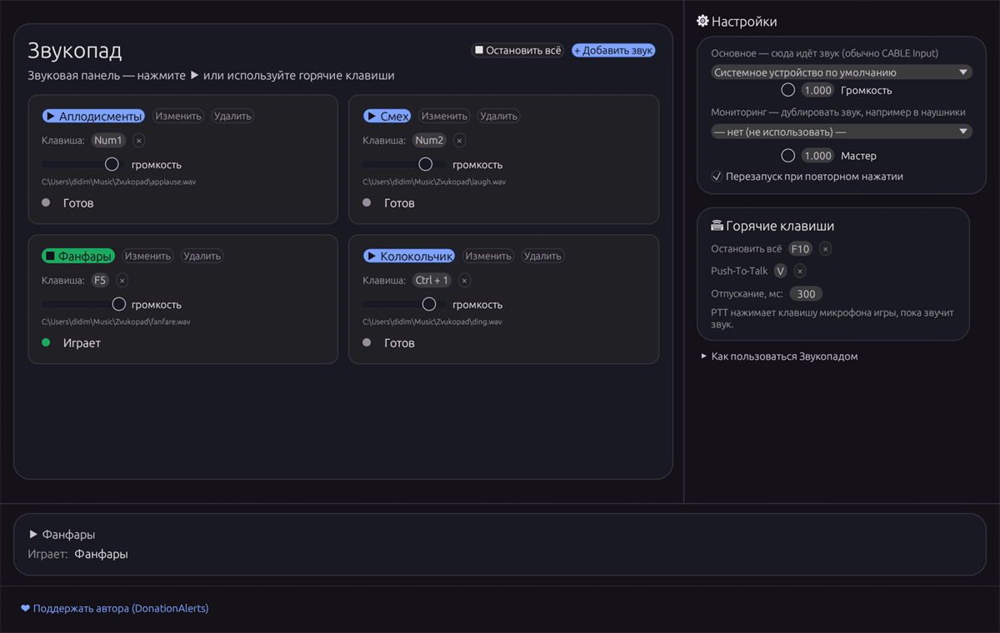

Горячие клавиши
Любая клавиша или комбинация: Numpad1, F5, Ctrl+Shift+F. Работают, даже когда окно свёрнуто.
Бесплатно · Windows 10/11 · MIT
Звуковая панель для Windows: звуки по горячим клавишам, вывод в Discord и игры через виртуальный кабель, мониторинг в наушниках и автоматический PTT.

Любая клавиша или комбинация: Numpad1, F5, Ctrl+Shift+F. Работают, даже когда окно свёрнуто.
Основной — CABLE Input для Discord, OBS и игр. Второй — наушники, чтобы слышать себя.
Звукопад сам зажимает клавишу микрофона на время звука. Игра думает, что вы говорите.
Один портативный exe. Настройки и список звуков хранятся в %APPDATA%\zvukopad.
Загрузите zvukopad.exe и запустите. Установка не требуется.
Бесплатный виртуальный кабель — vb-audio.com/Cable.
В Звукопаде выберите CABLE Input, в Discord или игре — микрофон CABLE Output.
Windows 10/11 · версия 1.0.23 · 8.4 МБ
Звукопад бесплатный. Если он помогает — поддержи автора ❤